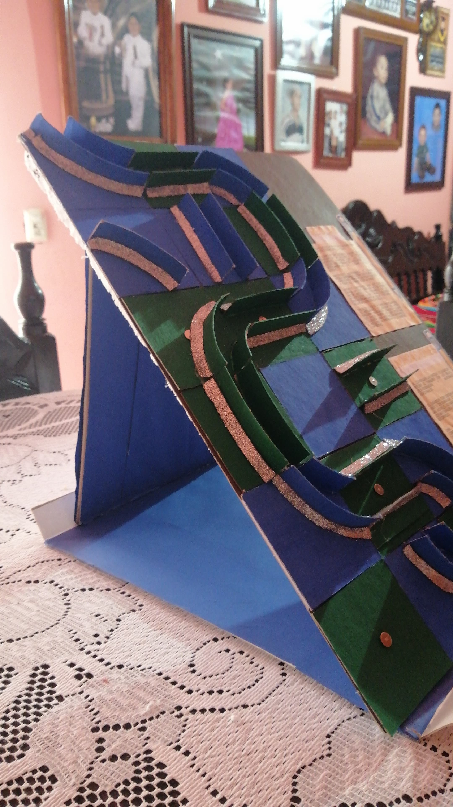

La Importancia de las 7 Rs en la Escuela
En la escuela, la implementación de las 7 Rs (Reducir, Reutilizar, Reciclar, Recuperar, Restaurar, Rediseñar y Repensar) es fundamental para promover la sostenibilidad y el cuidado del medio ambiente. A continuación, se presentan algunas de las razones por las que las 7 Rs son importantes en la escuela:
- Fomentar la conciencia ambiental: Al aprender sobre las 7 Rs, los estudiantes pueden desarrollar una mayor conciencia sobre la importancia de cuidar el medio ambiente y reducir su impacto ambiental.
- Desarrollar habilidades para la sostenibilidad: La implementación de las 7 Rs en la escuela puede ayudar a los estudiantes a desarrollar habilidades y prácticas sostenibles que pueden aplicar en su vida diaria.
- Reducir el impacto ambiental: Al reducir, reutilizar y reciclar, los estudiantes pueden ayudar a reducir la cantidad de residuos que se generan en la escuela y minimizar el impacto ambiental.
- Promover la creatividad y la innovación: La implementación de las 7 Rs puede fomentar la creatividad y la innovación en los estudiantes, ya que pueden encontrar nuevas formas de reducir, reutilizar y reciclar.
¿Por qué es importante para los estudiantes?
- Desarrollar hábitos sostenibles: Al aprender sobre las 7 Rs, los estudiantes pueden desarrollar hábitos sostenibles que pueden aplicar en su vida diaria y que pueden tener un impacto positivo en el medio ambiente.
- Prepararse para el futuro: La implementación de las 7 Rs en la escuela puede ayudar a los estudiantes a prepararse para un futuro más sostenible y a ser ciudadanos responsables y conscientes del medio ambiente.
- Fomentar la responsabilidad: Al participar en la implementación de las 7 Rs, los estudiantes pueden desarrollar un sentido de responsabilidad y compromiso con el cuidado del medio ambiente.
¿Cómo pueden los estudiantes poner en práctica las 7 Rs?
- Reducir el uso de papel y otros materiales en la escuela
- Reutilizar materiales y objetos en la escuela
- Reciclar papel, cartón, vidrio y otros materiales
- Participar en programas de reciclaje y reducción de residuos en la escuela
- Diseñar proyectos y actividades que promuevan la sostenibilidad y el cuidado del medio ambiente
Al trabajar juntos, los estudiantes y la comunidad escolar pueden hacer una diferencia y promover un futuro más sostenible.
